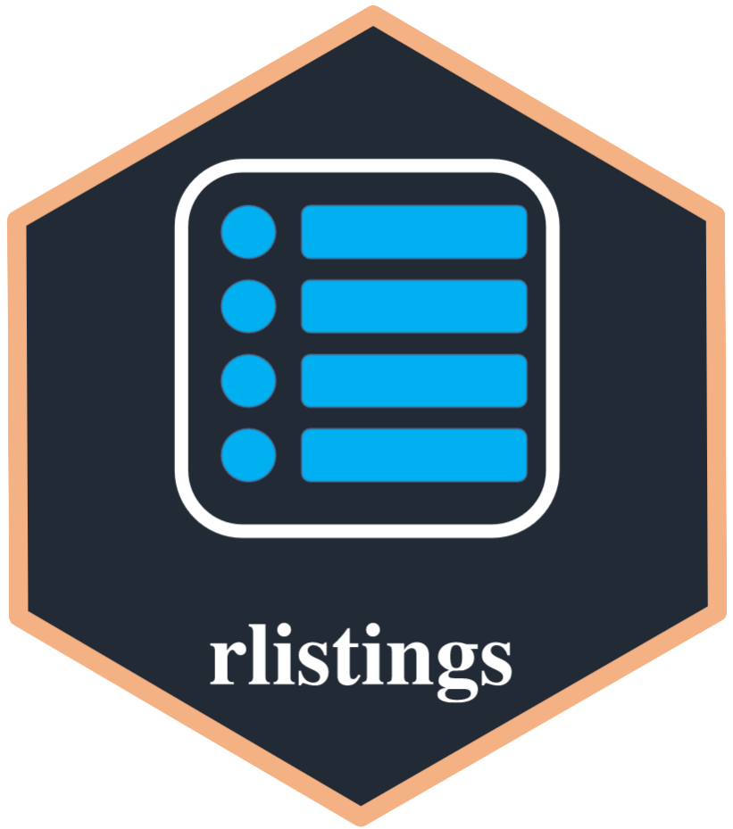

rlistings 


Listings with R
The rlistings R package is a package that was designed to create and display listings with R. The focus of this package is to provide functionality for value formatting and ASCII rendering infrastructure for tables and listings. Many of the functions contained in rlistings depend on the formatters package, which provides a framework for ASCII rendering and is available on CRAN.
rlistings development is driven by the need to create regulatory ready listings for health authority review. Some of the key requirements for this undertaking are listed below:
- flexible formatting (pagesize, column widths, alignment, labels, etc.)
- multiple output formats (csv, out, txt)
- repeated key columns
- flexible pagination in both horizontal and vertical directions
- titles and footnotes
rlistings currently covers some of these requirements, and remains under active development.
Installation
For releases from October 2022 it is recommended that you create and use a Github PAT to install the latest version of this package. Once you have the PAT, run the following:
Sys.setenv(GITHUB_PAT = "your_access_token_here")
if (!require("remotes")) install.packages("remotes")
remotes::install_github("insightsengineering/rlistings@*release")The rlistings package was not a part of the October 2022 stable release of all NEST packages, but the list of these NEST packages is available here.
See the Get started page for an introduction to creating listings using this package.
Usage
The following example shows a simple listing and its printed output.
library(rlistings)
#> Warning: package 'rlistings' was built under R version 4.2.2
#> Loading required package: formatters
#> Warning: package 'formatters' was built under R version 4.2.2
#> Loading required package: tibble
# Reducing the data
mtcars_ex <- mtcars %>% dplyr::mutate("car" = rownames(mtcars))
as_listing(mtcars_ex,
key_cols = c("gear", "carb"),
cols = c("gear", "carb", "qsec", "car")
) %>% head()
#> sorting incoming data by key columns
#> gear carb qsec car
#> ———————————————————————————————————————
#> 3 1 19.44 Hornet 4 Drive
#> 20.22 Valiant
#> 20.01 Toyota Corona
#> 2 17.02 Hornet Sportabout
#> 16.87 Dodge Challenger
#> 17.3 AMC Javelin